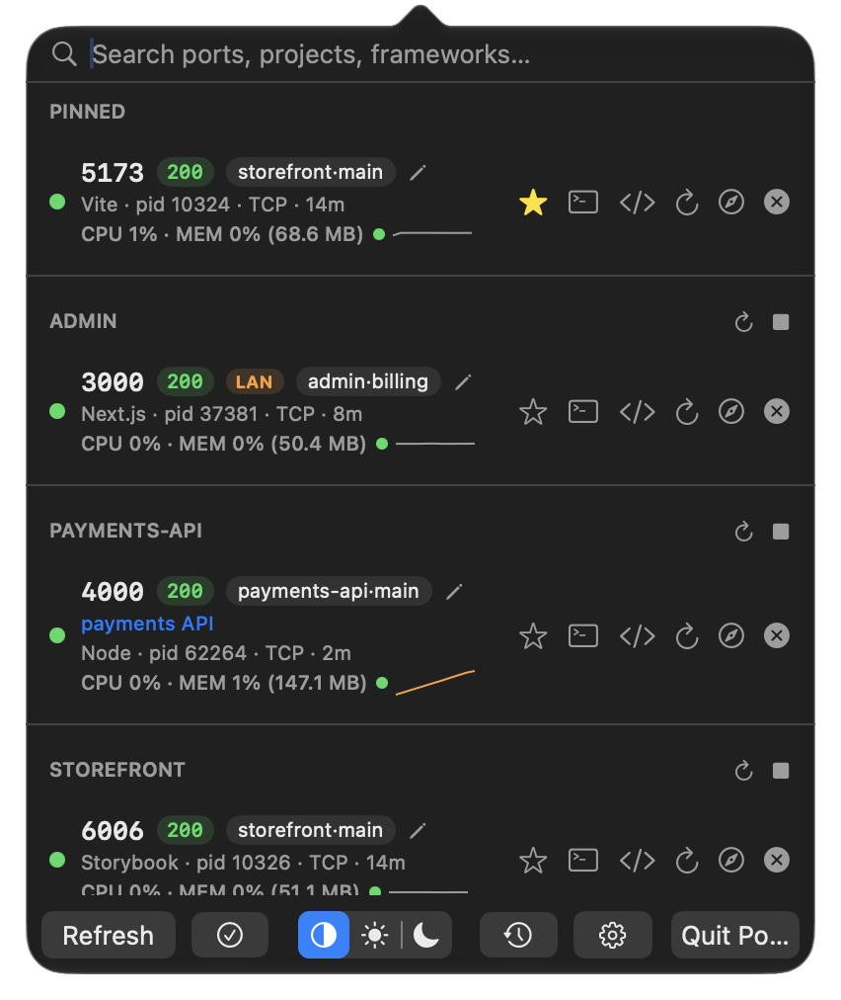

Know what's running on your ports.
A native macOS menu bar app that tracks every listening port — which project it belongs to, how much CPU it's burning, and how to kill it or jump to it, all in one click.
macOS 13+ · Free & open source · MIT licensed

Everything you need, nothing you don't
Framework-aware labeling
Recognizes Vite, Next.js, Rails, Django, Flask, FastAPI, Node, Bun, Deno, and more — right from the process's command line.
Git project context
Shows the repo name and current branch for each dev server, resolved from its working directory.
CPU, memory & energy
Live %CPU and %MEM per process, plus a color-coded energy indicator so you can spot the one burning your battery.
Jump to terminal
One click brings Terminal.app to the front and selects the exact tab running that process.
Open or copy the URL
Launch localhost:<port> in your browser, or right-click to copy the URL to your clipboard.
System / Light / Dark
Matches your Mac's appearance automatically, or override it from the menu.
Search & pin favorites
Filter by port, process, framework, project, or branch. Pin the ports you check most to a section of their own.
Notifications you can act on
Get alerted when a port starts listening, a pinned one dies or starts failing, or one goes idle — and relaunch, restart, kill or open it straight from the notification.
Docker awareness
Flags ports forwarded through Docker Desktop's host process, and makes them searchable via "docker".
Bulk actions
Select multiple ports and kill them all in one action — no more clicking through rows one at a time.
Launch at Login
Have Portly start automatically when you log in, toggled straight from Settings.
Quick restart
Kill and relaunch a dev server with its exact command line and working directory. Portly waits for the old process to let go of the port first, so the new one never hits "address already in use".
Ignore list & custom labels
Hide noisy processes for good, or give any port a memorable name like "staging API".
One-click updates
When a new version ships, click Download & Install — Portly verifies the download's checksum and code signature, swaps itself in place, and relaunches.
HTTP health badges
Every TCP port is probed and shows its status code — spot a dev server that's up but erroring at a glance.
Process trees
See the wrapper chain (npm → node) behind each port, and kill the whole tree so nothing respawns.
Keyboard-first
Arrows to move, Enter to open in browser, ⌘⌫ to kill — plus a rebindable global hotkey to open the menu.
Port history
A rolling log of what started and stopped listening, and when — answer "what was on 3000 an hour ago?"
Team config
Check a .portly.json into your repo to label expected ports for everyone — plus copy-as-curl for quick API pokes.
CLI companion
portly list, kill, restart, logs -f, wait, free and run from your terminal, sharing the app's smarts. Installed automatically via Homebrew, with zsh and fish completions.
.localhost proxy
Name any port and open it as name.localhost:7777 instead of hunting down a random port number.
Free port suggestion
Settings can suggest an unused port from the common 3000/5000/8000 dev ranges.
Open in editor
Jump straight into VS Code, Cursor, Zed, or Sublime Text from a port's row.
Docker container names
Docker-forwarded ports show the actual container name, resolved via docker ps.
Export .portly.json
Turn your manually-set labels into a shareable team config, from Settings.
Idle port alerts
Optional notification when a port has seen no network traffic for 30 minutes — the dev server you forgot was running.
LAN exposure badge
Flags ports bound to all interfaces — the ones anybody on your Wi-Fi can reach, not just you.
Real health checks
Point a port's probe at its actual health endpoint, and see response time — not just whether the socket is open.
Port conflict banner
When yesterday's server still holds 3000, Portly names the culprit and offers to free it.
Connected clients
See what's actually talking to a port, by process name — not just that bytes are moving.
Relaunch from history
Closed ports keep their command line, so a killed server can be started again with one click.
Force kill
A server that ignores SIGTERM doesn't just quietly stay up: Portly notices after five seconds and offers to SIGKILL it. Also portly kill --force.
Server logs
Anything Portly starts writes its output to a log you can tail live from the port's row — or with portly logs 3000 -f. Docker ports get their docker logs command.
Project workspaces
Declare a project's services in .portly.json and portly workspace up starts them in dependency order, waiting for each one's port. Or restart and stop a whole project from its header.
Share via tunnel
Expose a local port over the internet with a Cloudflare quick tunnel — no account, no config, just cloudflared.
Request log
See every request the .localhost proxy forwards to a port — method, path and time, keep-alive connections included.
Traffic & memory trends
Sparklines for network throughput and resident memory. The memory line turns orange when it keeps climbing — the slow leak a single reading hides.
Menu bar at a glance
Optional pinned-port health glyph and total CPU/memory right next to the icon, without opening the panel.
Links & Raycast
portly://open/3000, restart, kill and more drive the app from launchers and scripts. A ready-made Raycast extension ships in the repo.
Remote machines
portly remote devbox kill 3000 runs any command on another Mac over ssh.
Never "address in use"
portly run -- npm run dev sets $PORT to a free port — your preferred one when it's available — before starting the command.
Database health
Postgres, Redis, MySQL and MongoDB never answer HTTP, so they get a TCP handshake probe and a TCP badge instead of a permanent red one.
Get Portly
Install via Homebrew, grab the DMG from GitHub Releases, or build it yourself from source.
brew tap hellohopper/portly
brew install --cask portly